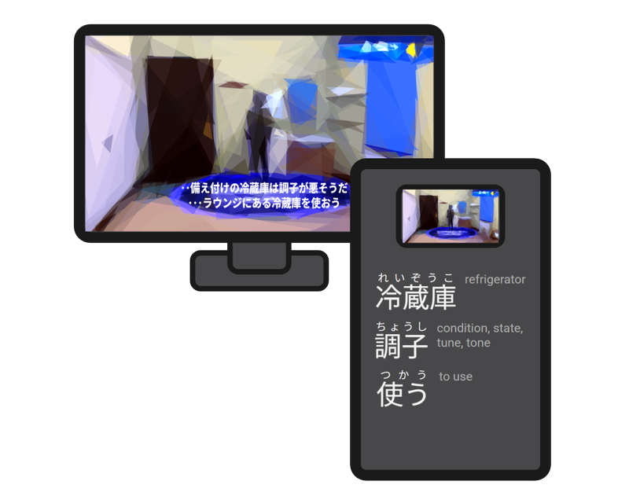
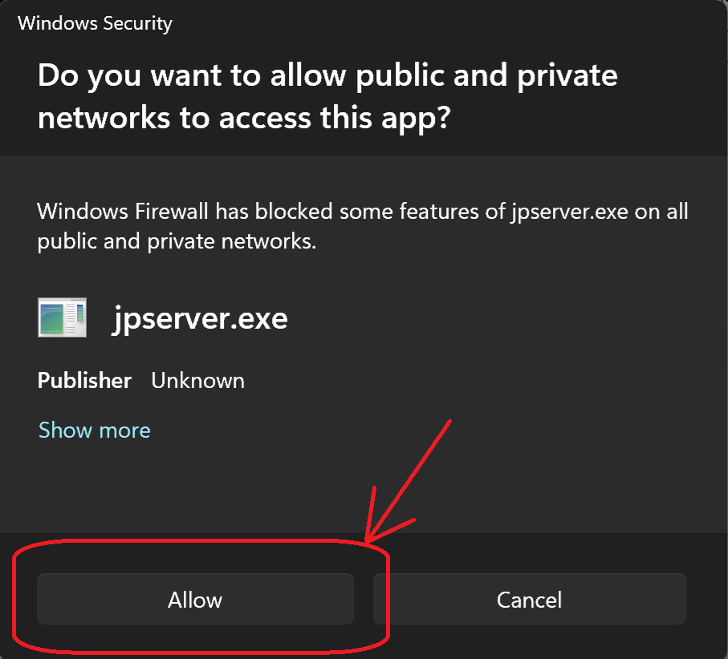
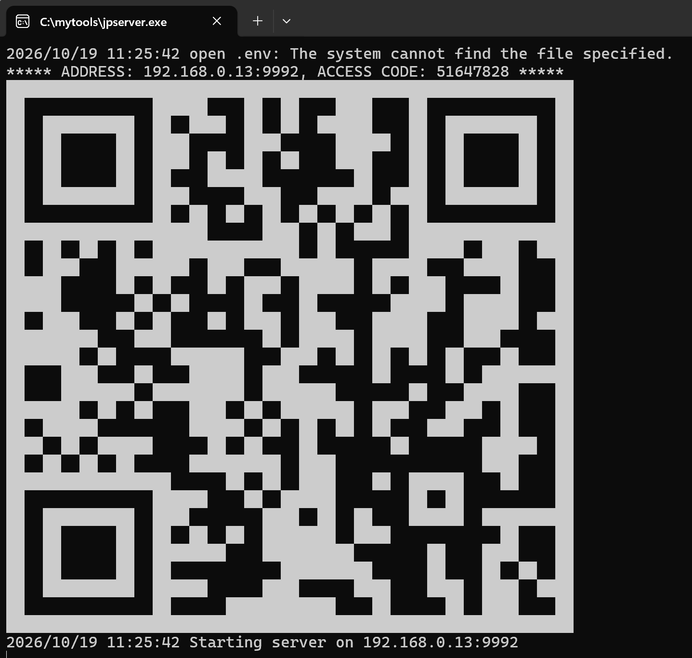
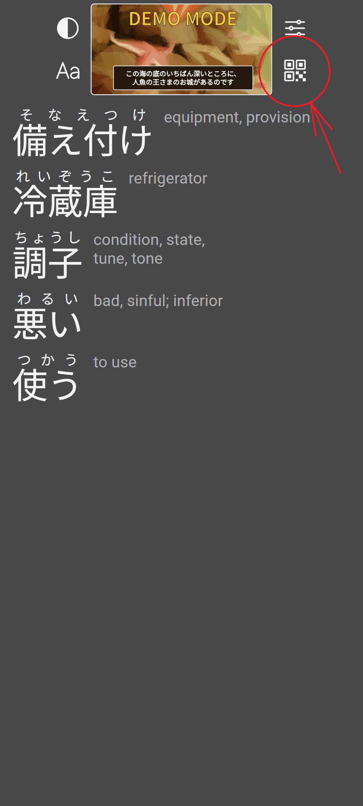
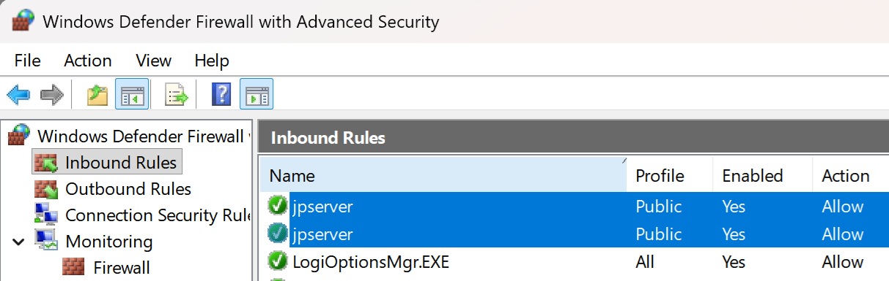

Gengo Catch
Japanese Vocabulary Extractor

What it does
- Captures images of your main monitor
- Delivers to your mobile (or tablet)
- Extracts Japanese text
- Displays the vocabulary list
How it works
- No login
- Real time
- Full screen
- 100% private
No need to create an account. Just use.
Captures a new image every second (configurable).
No need to switch between windows. Immerse in the content.
The screen captures stay on your device and are processed locally.
How to install
Your Windows PC
The server process (JPServer) runs on your Windows PC.
- Download the <latest release>
- Copy
jpserver.exeanywhere to your device (e.g.C:\mytools) - Run
jpserver.exe - Windows will ask you if you want to enable network access. IMPORTANT: You need to Allow access.
- The QR code will be shown in the terminal
If you don't trust the executable, you are free to review the <source code>. Feel free to clone the repo and build the
jpserver.exe from the sources. You can even create your own implementation, as long as it respects
the API.

This is required because jpserver.exe creates a local web server. The mobile app connects to that
server to retrieve screen captures. By default, the web server binds to your local IP and is not accessible
outside of your WiFi (you can confirm this looking at the output of the tool. It should show something like
"192.168.0.13").

You will need this code to connect the app.
Mobile app
At the moment, the mobile app is only available on Android.
At the moment, the mobile app is in internal testing. Use the link provided to you to download the app and become a tester.
- Install the GengoCatch mobile app from the PlayStore
- IMPORTANT: Make sure your app is connected to the same WiFi as your main PC!!!
- Open the app and scan the QR code

The app should connect and you should start seeing captures of your main screen.
Requirements
- Windows 8 or higher
- DirectX 11.1+ compatible GPU
- Go 1.26 or higher
Troubleshooting
- I started the app and scanned the code, but the app cannot connect
Check that the jpserver.exe is allowed by Windows Firewall

Check that jpserver.exe is not blocked by your antivirus program
Check that your mobile device is on the same WiFi as your Windows PC